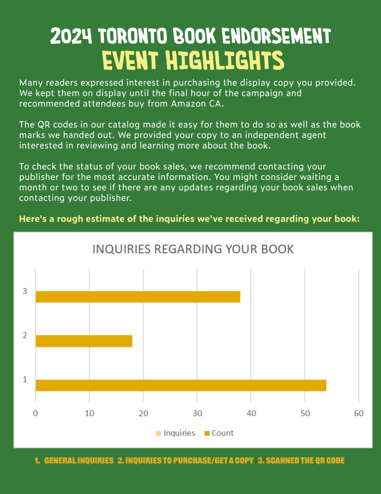

📸 Full Visual Gallery: NYLA 2024 Report
Browse through the full set of NYLA 2024 Fulfillment Report pages featuring Jonathan Kithcart’s participation. These pages capture highlights, library endorsements, professional engagement, and event statistics.


🇨🇦 Toronto Book Endorsement Campaign 2024
📸 Full Report Visual Gallery

Manila International Book Fair